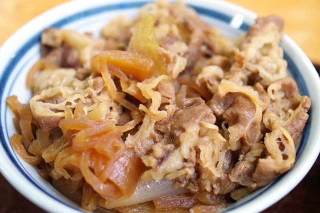

Gyudon

Poco mas que carne agridulce con cebolla sobre con un colchón de las comidas mas rapidas y comúnes de todo japon.
Aliado tanto de estudiantes como de trabajadores por igual.
Ingredientes:
- Arroz cocido
- Cebolla cortada en julianas
- Carne a eleccion cortada en tiras delgadas
- Salsa de soja
- Gengibre (fresco o en polvo)
- Azucar
- Vino blanco
- Sal y pimienta
- Huevo (opcional)
Preparacion:
- Mezclar en una cacerola media taza de vino blanco, media taza de salsa de soja, una cucharada o dos de azucar y poner a hervir.
- Cuando hierva incorporar la cebolla y el gengibre (A gusto) y hervir. Ni bien este blanda incorporar la carne, salpimentar a gusto y tapar.
- Colocar el arroz en un plato, cuenco y cuando se reduzca el líquido servir sobre el arroz junto a un huevo frito (Opcional).